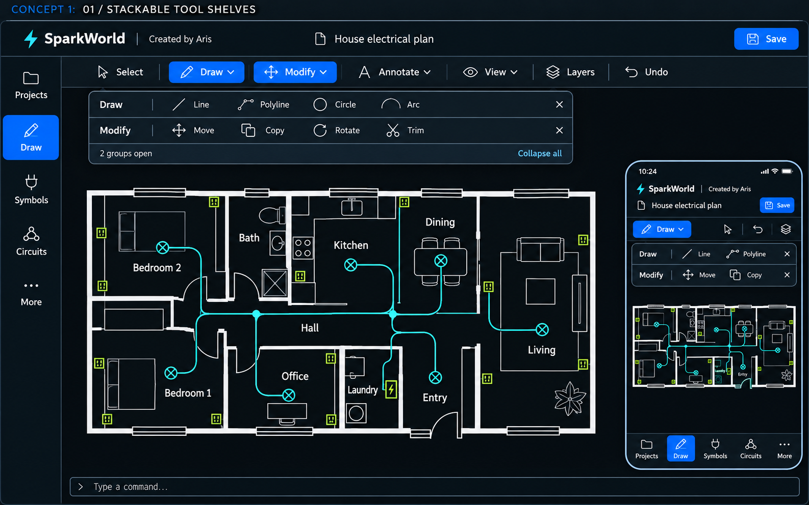

01
STACKABLE SHELVES
Ανεξάρτητα ράφια εργαλείων

Άνοιγμα εικόνας · μεγέθυνση ↗Πατάς Draw → ανοίγει η σειρά του. Πατάς Modify → ανοίγει και δεύτερη σειρά. Καθεμία κλείνει μόνη της ή κλείνεις όλες μαζί.
Γιατί να το διαλέξεις
Είναι η πιο κοντινή εκδοχή στη δική σου ιδέα. Κρατάς πολλές ομάδες διαθέσιμες για παράλληλη δουλειά.
Ο συμβιβασμός
Οι ανοιχτές σειρές καλύπτουν προσωρινά το επάνω μέρος του σχεδίου. Σε κινητό χρειάζεται όριο ύψους και scroll.